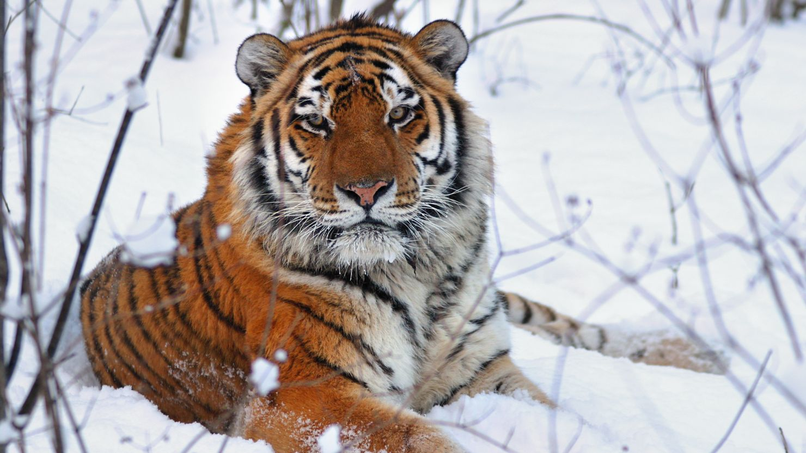
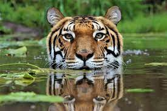
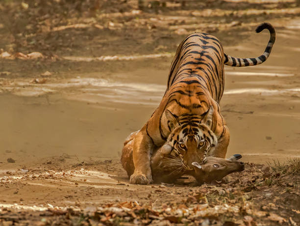
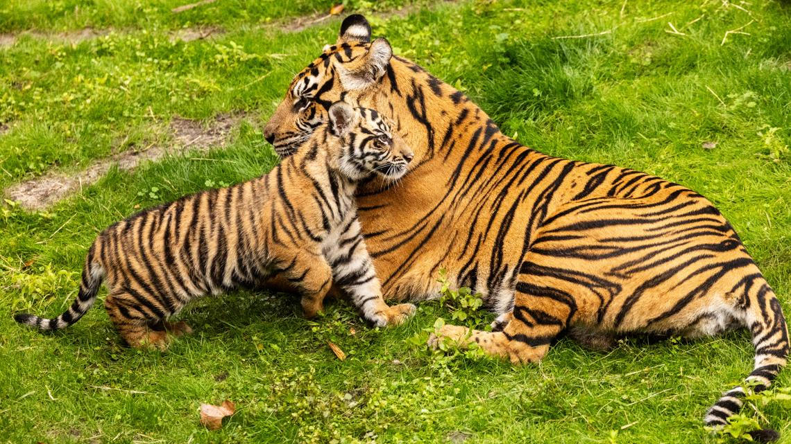
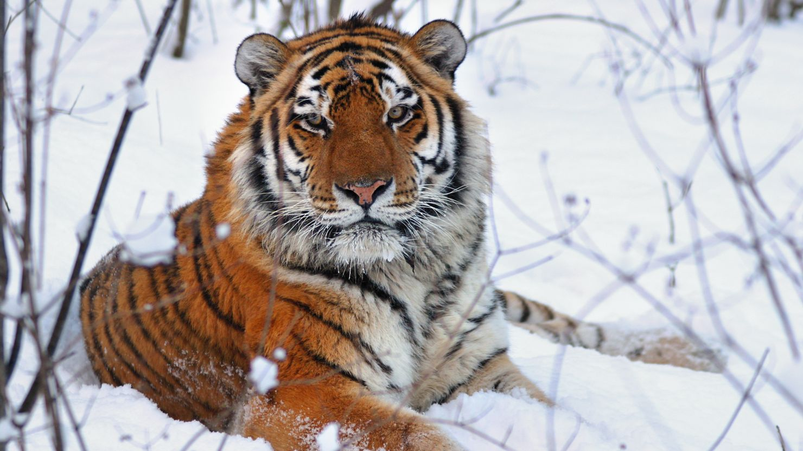
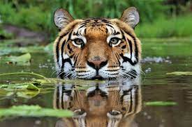
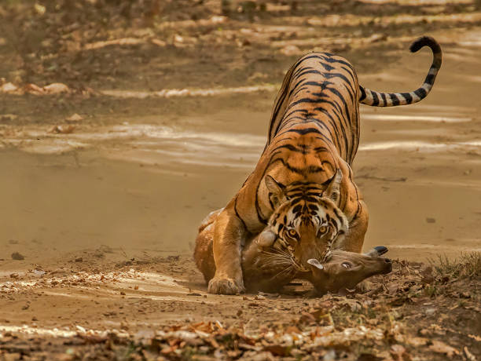
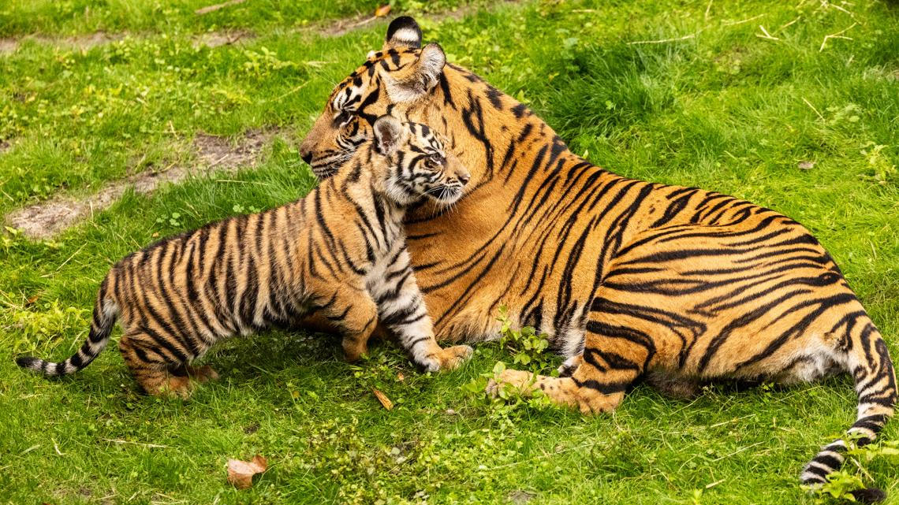

Tiger
Tigers are top predators in the wild. But like most wildlife, the Bengal Tiger faces several threats. Some of the major factors that endangers this majestic subspecies include –
Habitat loss and fragmentation:
With their territories shrinking because of urbanisation, tigers are often forced into competition with other predators for food and survival, which threatens their way of life.
conflict:
With the loss of their native habitats, tigers are now closer to human settlements. This causes frequent encounters between the two, which often conclude with harm caused to both human and animal.
Depletion of prey base:
As enormous cats that require a sizable home range and plenty of prey, tigers sometimes rely on readily available livestock and stray animals due to a fall in prey populations. Since tigers are found preying on their cattle, locals in the vicinity often resort to retaliatory killing.
poaching and trade of body parts:
Tigers are captured or killed for their bones, claws, and other body parts that are frequently sold in Southeast Asian markets. This illegal trade, in turn, is fuelled by the demand for live tigers and tiger-based products in the West, leading to a transnational poaching ring.
Tourism industry:
Tigers are an attraction that benefits the tourism industry. Sadly, tigers used for entertainment purposes are facing traumatic lives that include overbreeding, mother-cub separation, and declawing. Tigers in captivity are also known to be drugged often.

 






